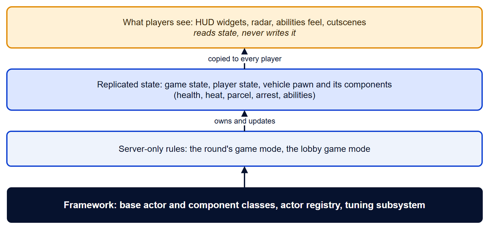
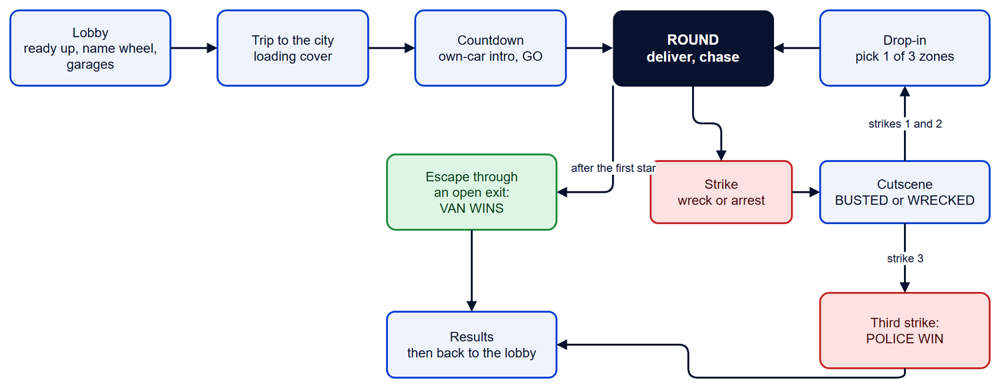

Shady Shipping
Shady ShippingHow the game fits together
The framework is what every system stands on: the round itself, the network and the data. It was built first, and no system is allowed to work around it.

One owner for everything
One rule applies to every system in this document:
This stops cheating, and it stops two machines disagreeing about what happened. If the courier's screen and a cop's screen disagreed about whether an arrest finished, the round would split in two. One owner on the server makes that impossible (Gregory, 2018; Epic Games, 2024).
The systems
Abdullah builds every system. Dafydd owns every gameplay number and the city map. Ieuan owns the HUD design. The team run the playtests together. Xabi owns the sirens and audio tests.
| System | What it does | Status |
|---|---|---|
| Match, strikes and exits | Runs the round: countdown, strikes, stars, exits, results | Built and playtested |
| Arrests and the drop-in | Arrest ring, the strike cutscenes and dropping the van back in | Built |
| Parcels and jobs | Jobs, loading bays, parcel tiers, ditching | Built and playtested |
| Money and profiles | Round cash, wallets, pay, the host's database | Built and playtested |
| Heat and detection | What each side knows: radar, search circles, sightings | Built and playtested |
| Dispatcher | Pages from the boss that change a run mid-drive | Hooks built, director planned |
| Police tools and abilities | Two abilities per player, for both sides | 10 of 18 built |
| Vehicles and damage | Handling, health, dents, wrecks, cameras, sound | Built and playtested |
| Destruction | Scaffolding that collapses, props, balloon pedestrians | Prototype only |
| Traffic and pedestrians | Cars and walkers that fill the city | Prototype only |
| Lobby and garage | Ready-up, the name wheel, the garages, the trip to the city | Built and playtested |
How the systems talk
Read across: the row system sends something to the column system. It shows where a change in one system ripples into others.
| From | Sends to | What |
|---|---|---|
| Lobby and garage | Match, Vehicles, Abilities, Money | Who drives the van, each player's look and abilities, purchases |
| Parcels | Money, Match, Heat | A delivery (pay and stars), the cargo tier |
| Heat | Police radar | Search circles, blips, sightings |
| Arrests | Match | A full arrest bar becomes a strike |
| Vehicles | Match | A wrecked van becomes a strike |
| Match | Drop-in, Money | Each strike starts the drop-in and pays the cops |
| Police tools | Vehicles | Net drag, burst tyres, an EMP switch-off |
Two things stand out. Match is the only system that starts and stops others, so round-flow bugs have one place to live. Vehicles is the most connected system, which is why it was built and tuned first: our pitch named bad driving feel as the biggest risk to the game.
The flow of a round

| Stage | What happens | How long |
|---|---|---|
| Lobby | Ready up, the name wheel picks the courier, each player picks abilities and customises | Garage 90 s |
| Trip to the city | A team-styled cover hides the map load; the round waits until every PC runs smoothly | Up to 90 s |
| Countdown | Each player sees an intro of their own car, then GO | 5 s |
| Round | Deliveries, chases, strikes and drop-ins | Until a win |
| Results | Each player's round summary from the host's database | 10 s |
A round can end in only two ways, and the server decides both.
| Ending | Rule | Result screen |
|---|---|---|
| The van escapes | After the first star, drive through an open exit at speed | The van wins, with its star bonus |
| Third strike | The van is wrecked or arrested for the third time | The police win: WRECKED, or BUSTED for an arrest |
Each stage switches a fixed set of systems on. This follows finite state machine practice: states never overlap and changes between them are explicit, so a system can never run in the wrong part of the round (Nystrom, 2014). For example, police tools cannot fire during the countdown.
Online design
Every system is designed for a host machine that decides everything. The design rules are:
| Rule | Why |
|---|---|
| The server decides every outcome | No player can cheat or disagree |
| Each car is predicted on its own driver's machine | Steering feels instant at 50 to 70 ms of lag |
| Effects done to a player are never trusted to that player's machine | A van cannot ignore a net or an EMP |
| Times are sent as an end time, not a ticking number | One message instead of one every second |
| Destruction shares the result, not the physics | Debris may differ; the blocked road never does |
| The police screens only show what the heat system allows | The courier's job, bays and parcel are never sent to police PCs |
How each rule is built is in the Technical Specification.
The tuning sheet
Every gameplay number lives in a table the game reads, not in code. The numbers are kept in one Google Sheet shared by the team. Dafydd owns every value, and the safe range next to each one becomes the limit in the code. A change in the sheet reaches a running game in 5 to 10 seconds, and in an online round the server passes it to every player, so everyone drives on the same numbers.
The big decision: where the master sheet lives. Each option was built and timed with a real phone edit.
| Option | For | Against | Verdict |
|---|---|---|---|
| A copy in source control | Versioned, works offline | Copies go stale; needs a lock rule; no phone editing | Rejected |
| A shared OneDrive folder | Stays an Excel file | A phone edit took over 5 minutes to arrive | Rejected |
| A OneDrive share link | Still Excel, no sync app | About 25 s per edit; uni accounts may block links | Fallback |
| A Google Sheets share link | Every phone edit arrived in 5 to 10 s; several editors at once | Leaves Excel; needs the internet | Chosen |
Google Sheets was the only option that delivered a phone edit within one five-second check every time. The game can read a OneDrive link too, so the choice can be reversed by pasting a different link. Abdullah and Dafydd made this call together.